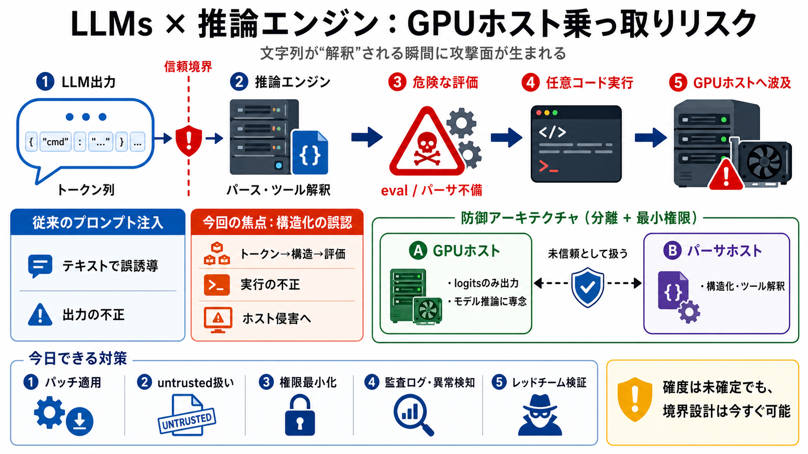

LLMs could control their host machines by exploiting inference ...
`eval()` CVE-2025-9141 was an arbitrary-code execution bug in vLLM’s XML-based tool parser for Qwen3 Coder. The parser …

`eval()` CVE-2025-9141 was an arbitrary-code execution bug in vLLM’s XML-based tool parser for Qwen3 Coder. The parser …
## Description A vulnerability was found in vLLM's Qwen3 Coder tool parser. Since this parser uses Python's eval() func…
| vLLM is an inference and serving engine for large language models (LLMs). Prior to 0.22.0, an assert-based security ch…
| vLLM is an inference and serving engine for large language models (LLMs). Starting in version 0.10.1 and prior to vers…
vLLM assumes that its cache directories are private and trusted. Cache contents are loaded without cryptographic integri…